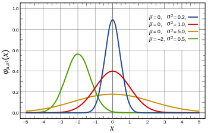

Naive bayes is a basic bayesian classifier. It's simple, fast, and widely used. You will see the beauty and power of bayesian inference. Naive bayes comes in 3 flavors in scikit-learn: MultinomialNB, BernoulliNB, and GaussianNB. In this post, we are going to implement all of them. Does it sound like a lot of work? It is. So let's get started.
Before We Get Started
For this tutorial, I assume you know the followings:
- Python(list comprehension, basic OOP)
- Numpy(broadcasting)
- Basic Linear Algebra
- Probability(gaussian distribution)
My code follows the scikit-learn style. If you are unfamiliar with scikit-learn, I recommend you check out the website. I also briefly mention it in my post, K-Nearest Neighbor from Scratch in Python.
I'm using python3. If you want to use python2, add this line at the beginning of your file and everything should work fine.
from __future__ import division
MultinomialNB
I will use the example from chapter 13 on An Introduction to Information Retrieval. I think it's the best introduction to multinomial naive bayes. PDF is also available for free. I will not explain how naive bayes works, so I expect you to know what is in the chapter.
Here is the initial code. alpha is a smoothing parameter which will be used later.
import numpy as np
np.set_printoptions(precision=6)
class MultinomialNB(object):
def __init__(self, alpha=1.0):
self.alpha = alpha
def fit(self, X, y):
# group by class
separated = [[x for x, t in zip(X, y) if t == c] for c in np.unique(y)]
print(separated)
First we need to group the training data by class. There are a lot of ways to accomplish the task. The obvious way is to use something like defaultdict. Instead, I'm using np.unique. It's much cleaner. But notice that we have to loop through X, the entire training data, for each class. If you have 20 target classes to classify, it would be inefficient. But most of the time you only have 2 classes, so it will be fine.
Let's try our code. I converted the data from table 13.1 to a matrix. We have 4 documents with 6 words(Chinese, Beijing, Shanghai, Macao, Tokyo, Japan) for the training set. In the book, the target class is yes or no, but I changed them to 0 and 1, respectively:
X = np.array([
[2,1,0,0,0,0],
[2,0,1,0,0,0],
[1,0,0,1,0,0],
[1,0,0,0,1,1]
])
y = np.array([0,0,0,1])
nb = MultinomialNB().fit(X, y)
This is the format that scikit-learn expects. Automatically constructing a word count matrix from raw text is not part of naive bayes. There is feature_extraction.text submodule for that. I might write another post about it in the future.
The output is a list of lists, each of which contains the samples:
[[array([2, 1, 0, 0, 0, 0]), array([2, 0, 1, 0, 0, 0]), array([1, 0, 0, 1, 0, 0])],
[array([1, 0, 0, 0, 1, 1])]]
We have three samples that belong to class 0, and one for class 1. Since we are using 0 and 1 for class, we can use index as a key. This simplifies the overall code dramatically. If we used dictionary instead, we would not be able to take advantage of numpy. Note that scikit-learn can take any value as a class.
Exercise 1
Your first exercise is to calculate \(log\hat{p}(c)\), the prior log probability for each class. Log probability is used to avoid floating point underflow. You can use count_sample, which is the number of training samples.
def fit(self, X, y):
separated = [[x for x, t in zip(X, y) if t == c] for c in np.unique(y)]
count_sample = X.shape[0]
self.class_log_prior_ = # Your code here
return self
nb = MultinomialNB().fit(X, y)
print(nb.class_log_prior_)
Output:
[-0.2876820724517809, -1.3862943611198906]
These numbers might not make much sense to you, but they are log of .75 and .25.
Solution
self.class_log_prior_ = [np.log(len(i) / count_sample) for i in separated]
Exercise 2
Next we want to count each word for each class and add self.alpha as smoothing:
def fit(self, X, y):
separated = [[x for x, t in zip(X, y) if t == c] for c in np.unique(y)]
count_sample = X.shape[0]
self.class_log_prior_ = [np.log(len(i) / count_sample) for i in separated]
count = # Your code here
print(count)
return self
nb = MultinomialNB(alpha=1).fit(X, y)
Output:
[[6 2 2 2 1 1]
[2 1 1 1 2 2]]
Chinese appears 5 times and Beijing, Shanghai, Macao once in class 0. In class 1, Chinese, Tokyo, and Japan appear once. Since alpha=1, 1 is added to each count.
Solution
We can use numpy's sum to broadcast sum operation. + self.alpha is also broadcasted.
count = np.array([np.array(i).sum(axis=0) for i in separated]) + self.alpha
Exercise 3
Finally we can calculate the log probability of each word, \(log\hat{p}(t|c)\). You divide count by the length of text:
def fit(self, X, y):
separated = [[x for x, t in zip(X, y) if t == c] for c in np.unique(y)]
count_sample = X.shape[0]
self.class_log_prior_ = [np.log(len(i) / count_sample) for i in separated]
count = np.array([np.array(i).sum(axis=0) for i in separated])
# log probability of each word
self.feature_log_prob_ = # Your code here
return self
nb = MultinomialNB().fit(X, y)
print(nb.feature_log_prob_)
Output:
[[-0.847298 -1.94591 -1.94591 -1.94591 -2.639057 -2.639057]
[-1.504077 -2.197225 -2.197225 -2.197225 -1.504077 -1.504077]]
Solution
There is a lot going on in 1 line. In our example, count.sum(axis=1) is [14, 9]. To broadcast it, we need to transpose it. But for some reason, transposing 1d array is a bit inconvenient in numpy. Just adding .T does nothing. So you have to use [np.newaxis]:
self.feature_log_prob_ = np.log(count / count.sum(axis=1)[np.newaxis].T)
Predict
Exercise 4
Now we have the code to train the data, we can predict. predict_log_proba outputs the log probability of each class. Use self.class_log_prior_ and self.feature_log_prob_ for the calculation:
def predict_log_proba(self, X):
# Your code here
The first test data is the same as the book. The second one I made up:
nb = MultinomialNB().fit(X, y)
X_test = np.array([[3,0,0,0,1,1],[0,1,1,0,1,1]])
print(nb.predict_log_proba(X_test))
Output:
[array([-8.10769 , -8.906681]), array([-9.457617, -8.788898])]
Solution
def predict_log_proba(self, X):
return [(self.feature_log_prob_ * x).sum(axis=1) + self.class_log_prior_
for x in X]
Exercise 5
predict_log_proba does most of the work, so predict just calls it and picks the maximum value.
def predict(self, X):
# Your code here
nb = MultinomialNB().fit(X, y)
X_test = np.array([[3,0,0,0,1,1],[0,1,1,0,1,1]])
print(nb.predict(X_test))
Output:
[0 1]
Solution
You can use argmax to return the corresponding index:
def predict(self, X):
return np.argmax(self.predict_log_proba(X), axis=1)
Here is the complete code:
class MultinomialNB(object):
def __init__(self, alpha=1.0):
self.alpha = alpha
def fit(self, X, y):
count_sample = X.shape[0]
separated = [[x for x, t in zip(X, y) if t == c] for c in np.unique(y)]
self.class_log_prior_ = [np.log(len(i) / count_sample) for i in separated]
count = np.array([np.array(i).sum(axis=0) for i in separated]) + self.alpha
self.feature_log_prob_ = np.log(count / count.sum(axis=1)[np.newaxis].T)
return self
def predict_log_proba(self, X):
return [(self.feature_log_prob_ * x).sum(axis=1) + self.class_log_prior_
for x in X]
def predict(self, X):
return np.argmax(self.predict_log_proba(X), axis=1)
BernoulliNB
Bernoulli naive bayes is similar to multinomial naive bayes, but it only takes binary values. In our example, each value will be whether or not a word appears in a document. That is a very simplified model. Nevertheless, when word frequency is less important, bernoulli naive bayes may yield a better result.
We will continue using the same example. The corresponding part in the book is here.
Most of fit is the same as MultinomialNB. I added two lines. n_doc is the number of documents in each class + smoothing where smoothing is 2 * self.alpha.
class BernoulliNB(object):
def __init__(self, alpha=1.0):
self.alpha = alpha
def fit(self, X, y):
count_sample = X.shape[0]
# group by class
separated = [[x for x, t in zip(X, y) if t == c] for c in np.unique(y)]
# class prior
self.class_log_prior_ = [np.log(len(i) / count_sample) for i in separated]
# count of each word
count = np.array([np.array(i).sum(axis=0) for i in separated]) + self.alpha
smoothing = 2 * self.alpha
# number of documents in each class + smoothing
n_doc = np.array([len(i) + smoothing for i in separated])
print(n_doc)
We have to change X to have binary values. We can use numpy.where to change every value that is greater than 0 to 1:
nb = BernoulliNB(alpha=1).fit(np.where(X > 0, 1, 0), y)
Output:
[5 3]
Exercise 6
The last part of fit is self.feature_prob_. We don't take log at this point. You will see why in a minute:
def fit(self, X, y):
count_sample = X.shape[0]
separated = [[x for x, t in zip(X, y) if t == c] for c in np.unique(y)]
self.class_log_prior_ = [np.log(len(i) / count_sample) for i in separated]
count = np.array([np.array(i).sum(axis=0) for i in separated]) + self.alpha
smoothing = 2 * self.alpha
n_doc = np.array([len(i) + smoothing for i in separated])
# probability of each word
self.feature_prob_ = # Your code here
return self
nb = BernoulliNB(alpha=1).fit(np.where(X > 0, 1, 0), y)
print(nb.feature_prob_)
Output:
[[ 0.8 0.4 0.4 0.4 0.2 0.2 ]
[ 0.666667 0.333333 0.333333 0.333333 0.666667 0.666667]]
Solution
It's similar to MultinomialNB:
self.feature_prob_ = count / n_doc[np.newaxis].T
Exercise 7
This is probably the toughest exercise in this tutorial. Just like last time, your code should output the log probability of each class. In multinomial model, nonoccuring words do not affect the posterior probability. But in bernoulli model, \(1 - \hat{p}(t|c)\) is used instead. That's why I didn't take log in fit. Hint: You can use if statement, but my solution does not have one:
def predict_log_proba(self, X):
# Your code here
X_test = np.array([[1,0,0,0,1,1],[1,1,1,0,0,1]])
nb = BernoulliNB(alpha=1).fit(np.where(X > 0, 1, 0), y)
print(nb.predict_log_proba(X_test))
Output:
[array([-8.927341, -6.82724 ]), array([-7.459403, -5.898527])]
Solution
My solution is a really long 1 line. Sometimes you can express a control flow using math. np.abs(x - 1) flips 1 and 0. It does look cryptic at first, but I found it much cleaner than using if-else.
def predict_log_proba(self, X):
return [(np.log(self.feature_prob_) * x + \
np.log(1 - self.feature_prob_) * np.abs(x - 1)
).sum(axis=1) + self.class_log_prior_ for x in X]
predict is the same as MultinomialNB, so we are done!
class BernoulliNB(object):
def __init__(self, alpha=1.0):
self.alpha = alpha
def fit(self, X, y):
count_sample = X.shape[0]
separated = [[x for x, t in zip(X, y) if t == c] for c in np.unique(y)]
self.class_log_prior_ = [np.log(len(i) / count_sample) for i in separated]
count = np.array([np.array(i).sum(axis=0) for i in separated]) + self.alpha
smoothing = 2 * self.alpha
n_doc = np.array([len(i) + smoothing for i in separated])
self.feature_prob_ = count / n_doc[np.newaxis].T
return self
def predict_log_proba(self, X):
return [(np.log(self.feature_prob_) * x + \
np.log(1 - self.feature_prob_) * np.abs(x - 1)
).sum(axis=1) + self.class_log_prior_ for x in X]
def predict(self, X):
return np.argmax(self.predict_log_proba(X), axis=1)
Binarize
So far, we have been manually binarizing X. It would be nice if it's done automatically. BernoulliNB in scikit-learn has binarize parameter for that:
class BernoulliNB(object):
def __init__(self, alpha=1.0, binarize=0.0):
self.alpha = alpha
self.binarize = binarize
It specifies the threshold for binarizing. You can set it to None if your data does not need binarizing.
I added 1 line of code to the beginning of every method that uses X. It calls _binarize_X, which does the actual binarizing.
def fit(self, X, y):
X = self._binarize_X(X)
...
def predict_log_proba(self, X):
X = self._binarize_X(X)
...
def predict(self, X):
X = self._binarize_X(X)
...
def _binarize_X(self, X):
return np.where(X > self.binarize, 1, 0) if self.binarize != None else X
Now you can just pass X:
nb = BernoulliNB(alpha=1).fit(X, y)
GaussianNB
If your data has a continuous variable, then Multinomial and Bernoulli are not suitable. You can discretize it, but a more common approach is to use Gaussian distribution:

Not every data follows a Gaussian distribution, but it's a pretty good assumption.
Exercise 8
GaussianNB takes no parameter. separated is the same as the other models. self.model is going to be the mean and the standard deviation of each attribute for each class.
class GaussianNB(object):
def __init__(self):
pass
def fit(self, X, y):
separated = [[x for x, t in zip(X, y) if t == c] for c in np.unique(y)]
self.model = # Your code here
return self
We are going to use the iris flower dataset:
from sklearn import datasets
iris = datasets.load_iris()
nb = GaussianNB().fit(iris.data, iris.target)
print(nb.model)
The iris dataset has 4 features and 3 classes, so the output looks like this:
[[[ 5.006 0.348947]
[ 3.418 0.377195]
[ 1.464 0.171767]
[ 0.244 0.106132]]
[[ 5.936 0.510983]
[ 2.77 0.310644]
[ 4.26 0.465188]
[ 1.326 0.195765]]
[[ 6.588 0.629489]
[ 2.974 0.319255]
[ 5.552 0.546348]
[ 2.026 0.27189 ]]]
For example, 5.006 on the top left is the mean of the first attribute in class 0, and 0.27189 on the bottom right is the standard deviation of the fourth attribute in class 1.
Solution
Here is my solution:
self.model = np.array([np.c_[np.mean(i, axis=0), np.std(i, axis=0)]
for i in separated])
numpy.c_ is like zip:
>>> np.c_[[1,2],[3,4]]
array([[1, 3],
[2, 4]])
Exercise 9
Let's write gaussian distribution. The formula is as follows:
def _prob(self, x, mean, std):
"""Gaussian distribution in log"""
# Your code here
nb = GaussianNB()
print(nb._prob(0, 0, 1))
Output:
-0.918938533205
which is \(log(.4)\).
Solution
def _prob(self, x, mean, std):
"""Gaussian distribution in log"""
exponent = np.exp(- ((x - mean)**2 / (2 * std**2)))
return np.log(exponent / (np.sqrt(2 * np.pi) * std))
Exercise 10
This is the last exercise in this tutorial. predict_log_proba is as simple as applying the gaussian distribution, though the code might not necessarily be simple:
def predict_log_proba(self, X):
# Your code here
nb = GaussianNB().fit(iris.data, iris.target)
print(nb.predict_log_proba(iris.data[:2])) # just two samples
Output:
[[2.1414955664687394, -38.979365927930132, -55.744042534101993],
[1.5412386825371427, -37.209274991620475, -55.191594591414542]]
Solution
There are three loops in the code. The first one(for x in X) loops through each sample. The second one loops through each class. And the last one loops through each attribute and applies the gaussian distribution. *s unpacks an array of mean and standard deviation.
def predict_log_proba(self, X):
return [[sum(self._prob(i, *s) for s, i in zip(summaries, x))
for summaries in self.model] for x in X]
predict is the same as the other models. Here is the complete code:
class GaussianNB(object):
def __init__(self):
pass
def fit(self, X, y):
separated = [[x for x, t in zip(X, y) if t == c] for c in np.unique(y)]
self.model = np.array([np.c_[np.mean(i, axis=0), np.std(i, axis=0)]
for i in separated])
return self
def _prob(self, x, mean, std):
exponent = np.exp(- ((x - mean)**2 / (2 * std**2)))
return np.log(exponent / (np.sqrt(2 * np.pi) * std))
def predict_log_proba(self, X):
return [[sum(self._prob(i, *s) for s, i in zip(summaries, x))
for summaries in self.model] for x in X]
def predict(self, X):
return np.argmax(self.predict_log_proba(X), axis=1)
def score(self, X, y):
return sum(self.predict(X) == y) / len(y)
I also added score. Every classification class in scikit-learn has the same score method. I talked about it in K-Nearest Neighbor from Scratch in Python.
Let's test it:
from sklearn.cross_validation import train_test_split
iris = datasets.load_iris()
X, y = iris.data, iris.target
X_train, X_test, y_train, y_test = train_test_split(X, y, test_size=.25)
nb = GaussianNB().fit(X_train, y_train)
print(nb.score(X_train, y_train))
print(nb.score(X_test, y_test))
Using train_test_split function from cross_validation module, it splits the data into the training set and the test set. Both the training accuracy and the test accuracy is close to 1 in this case.
Conclusion
If you attempted all the 10 exercises, thank you! I hope you learned something. If you have questions or comments, tweet @kenzotakahashi and I'll be happy to help.